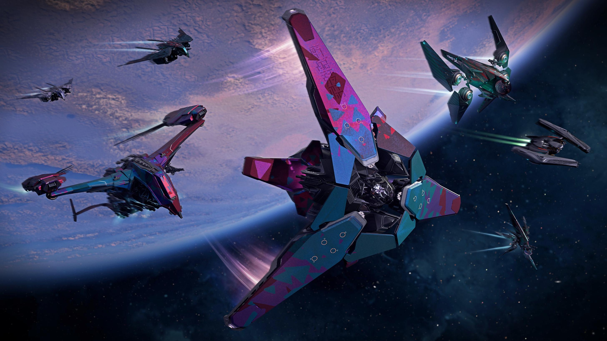
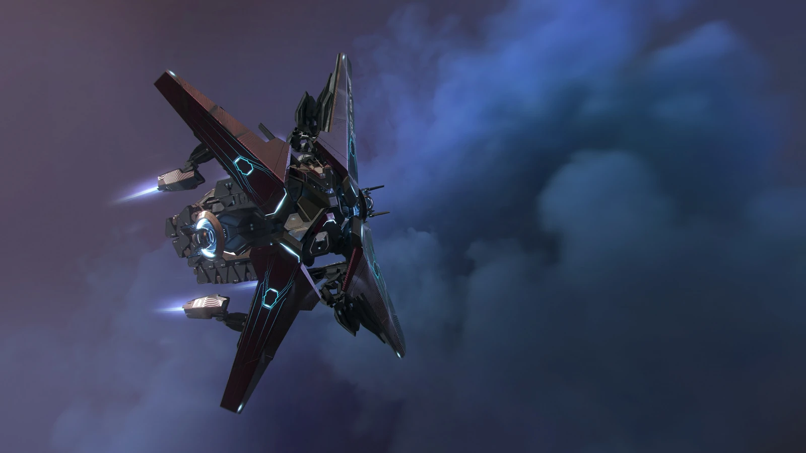
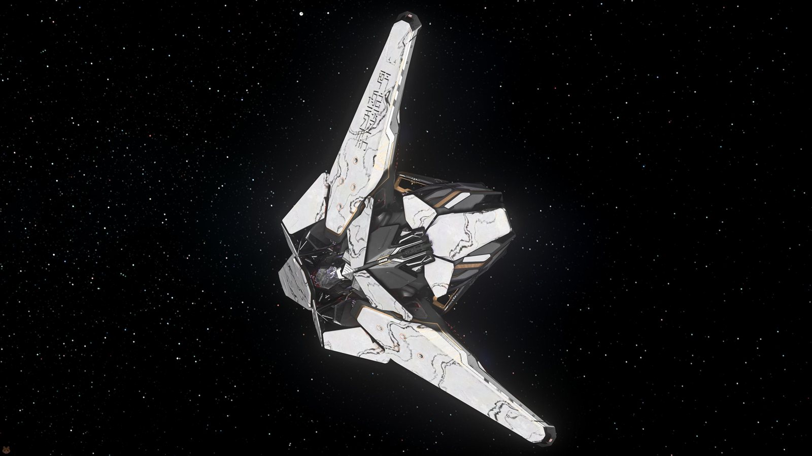
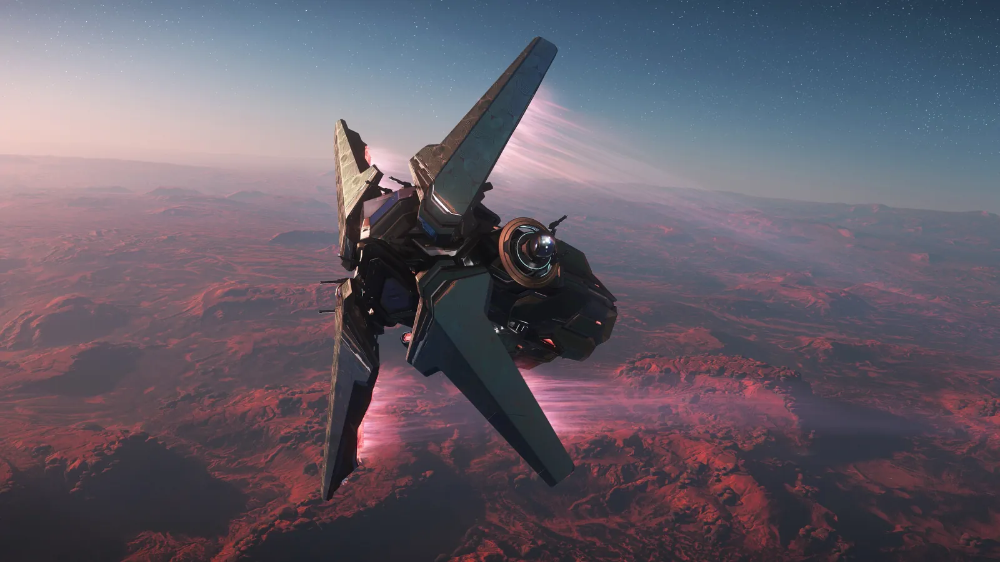
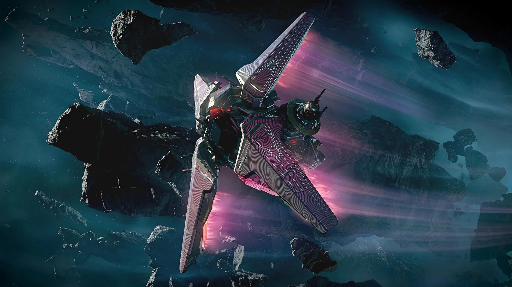

First Contact Day 2956Alien Week
Die jährliche Feier der nicht-menschlichen Hersteller: rund um First Contact Day rückt Alien Week Xenotech ins Rampenlicht — mit den Gatac-Schiffen Railen, Syulen und Tyilui als Headliner.
Einmal im Jahr feiert das Verse den ersten Kontakt — und stellt jene Hersteller in den Mittelpunkt, die nicht von Menschenhand stammen. Alien Week ist die Bühne für Xenotech.
Eine Woche, in der fremde Technik die Hauptrolle spielt.Alien Week · First Contact Day 2956
Das Fest der nicht-menschlichen Hersteller
Alien Week ist das jährliche Event rund um First Contact Day, das die nicht-menschlichen bzw. Xenotech-Hersteller von Star Citizen in den Mittelpunkt stellt. Eine Woche lang dreht sich alles um Technik jenseits menschlicher Werften.
Begleitet wird das Event von Community-Aktivitäten wie Alien-Lore-Features und Xi'an-Sprachlektionen — Kontext und Kultur zu den fremden Konstrukteuren, deren Schiffe im Rampenlicht stehen.
So funktioniert das Event
First Contact Day
Das Event startet rund um First Contact Day — den jährlichen Anlass, der den ersten Kontakt feiert und Xenotech ins Zentrum rückt.
Pledge-Store-Aktionen
Zeitlich begrenzte Aktionen im Pledge Store machen Schiffe von Alien-Herstellern wie Gatac Manufacture, Aopoa, Banu und Esperia verfügbar.
Limitierte Ausstattung
Dazu kommen limitierte Lackierungen und Ausrüstung — fremde Designsprache, die nur in diesem Zeitfenster zu haben ist.
Lore & Sprache
Alien-Lore-Features und Xi'an-Sprachlektionen begleiten die Woche und liefern den kulturellen Hintergrund der Hersteller.
Für 2956 führen drei Gatac-Schiffe die Woche an: die flugfertige Railen, der Syulen-Starter und der neue Tyilui-Träger.
Hersteller im Spotlight
Gatac Manufacture
Headliner 2956: Railen, Syulen und der neue Tyilui-Träger.
Aopoa
Xi'an-Bauweise — gezeigt mit Schiffen wie Khartu-al und Nox.
Esperia
Rekonstruierte Fremdtechnik — vertreten durch den Talon.
Banu
Die Banu-Reihe rundet das Aufgebot der Alien-Hersteller ab.
Von Aopoas Khartu-al und Nox über Esperias Talon bis zur Banu-Reihe — Alien Week bringt zeitlich begrenzte Store-Aktionen, limitierte Lackierungen und Ausrüstung der fremden Werften.
Media

⤢
⤢
⤢
⤢
⤢Quelle: offizieller Star-Citizen-YouTube-Kanal & Star Citizen Wiki (© Cloud Imperium Games). · Auf YouTube ansehen ↗